How we see the brand
Real production media: the brand poster, live client work, and the decorative motifs that carry our editorial, sharp-cornered, warm-neutral look across every page.
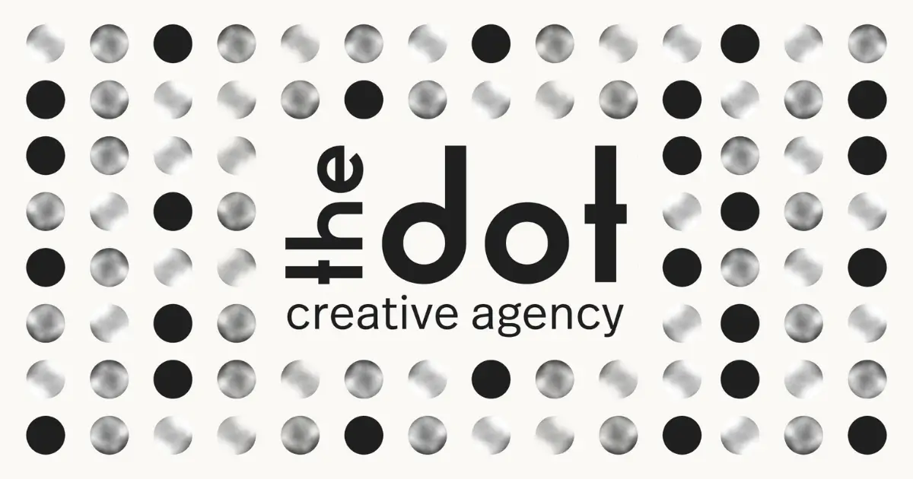
The signature brand image — used as the share card across the whole site. A grid of circles: most filled with a soft radial gradient, a few solid ink, with the wordmark set inside the grid. In live UI the same circles fill with our yellow gradient. This is the tone every project echoes.
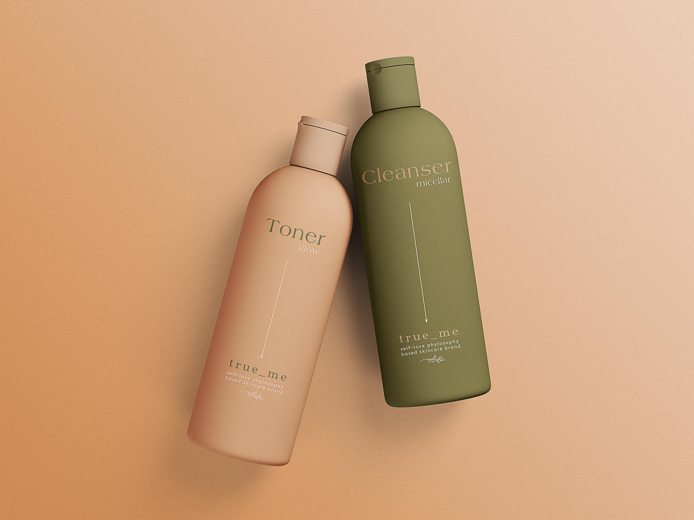
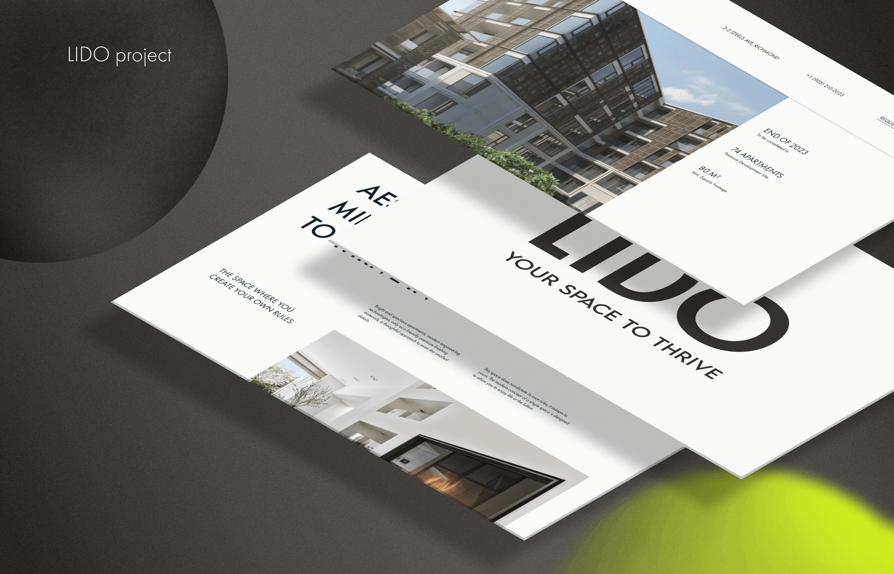
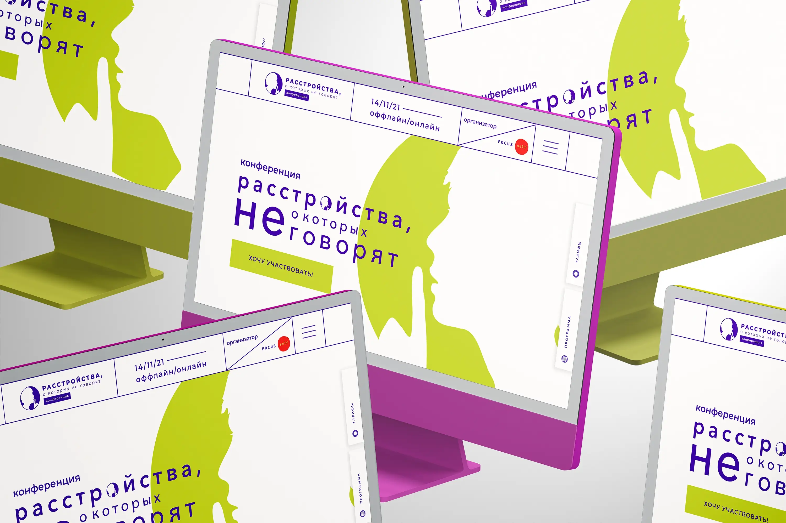
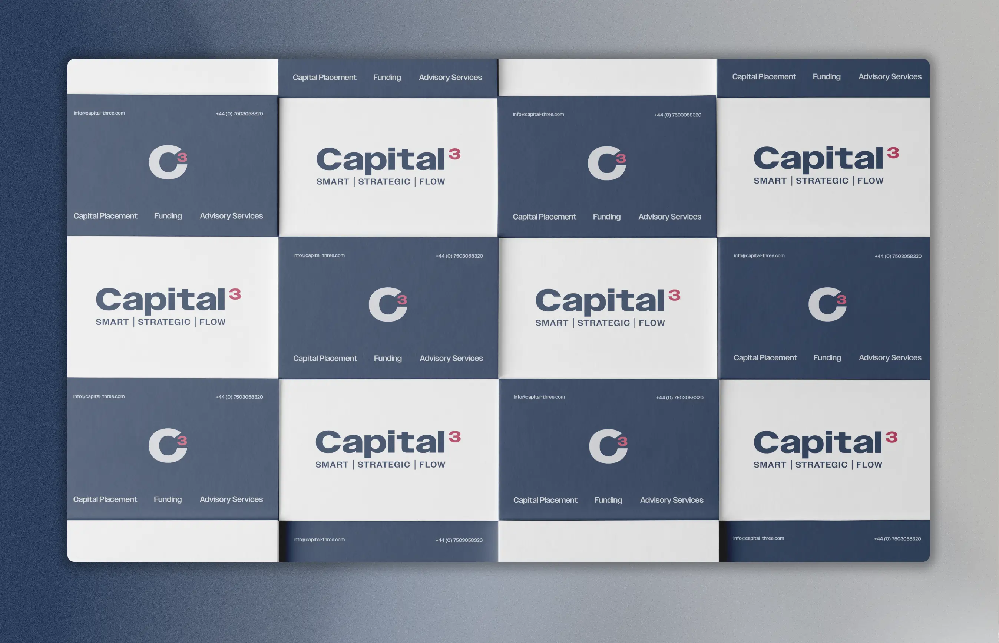
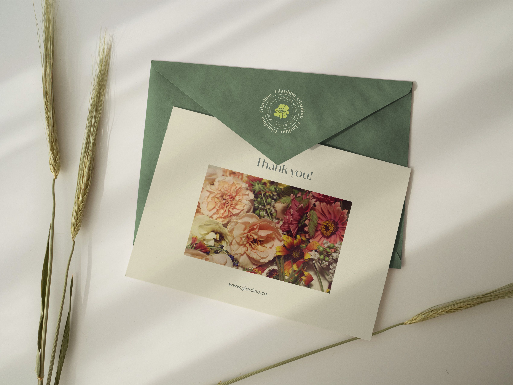
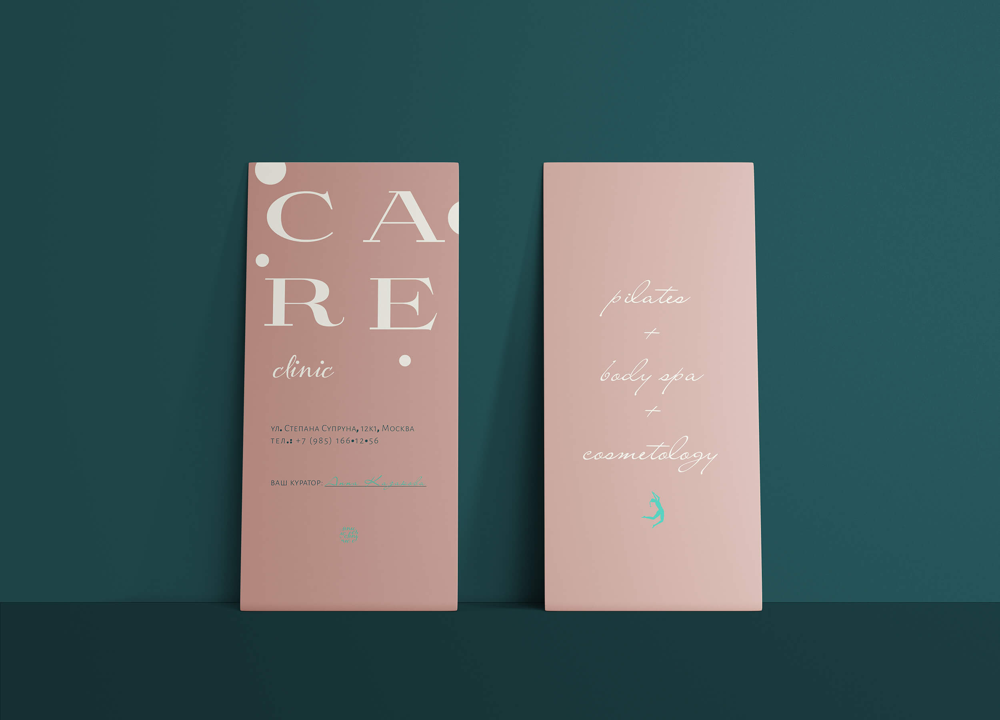
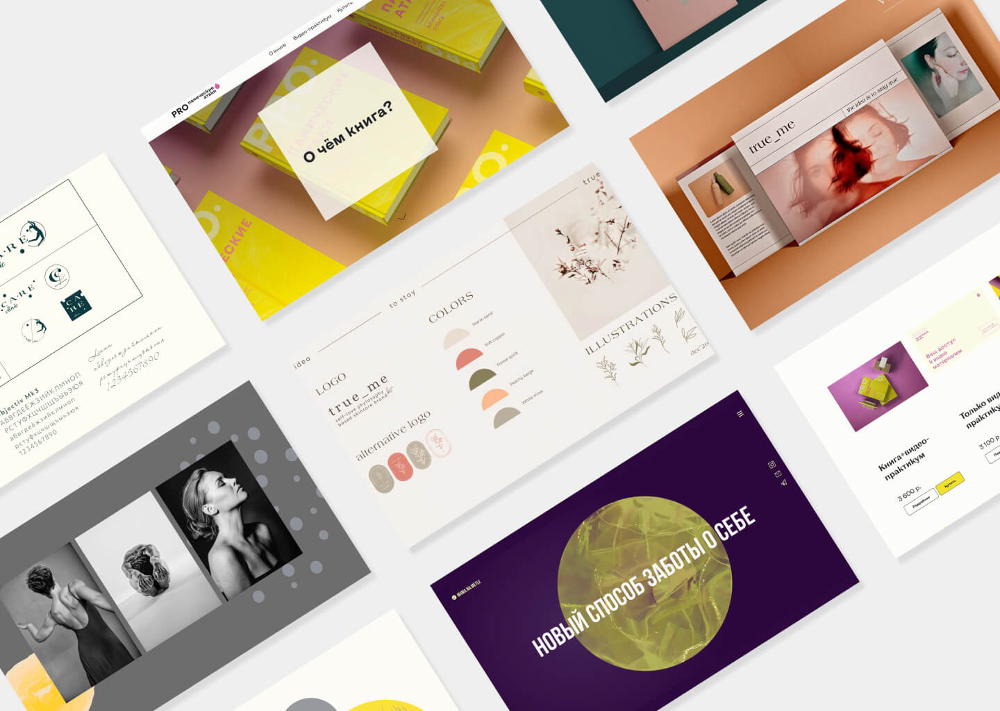
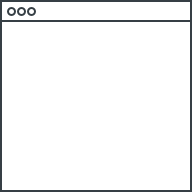
Dot motif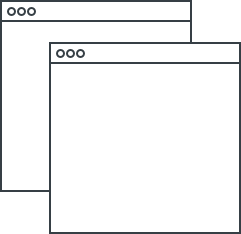
Shape 7·1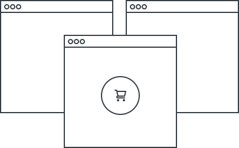
Shape 6·2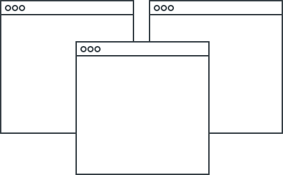
Shape 6·3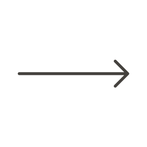
Arrow